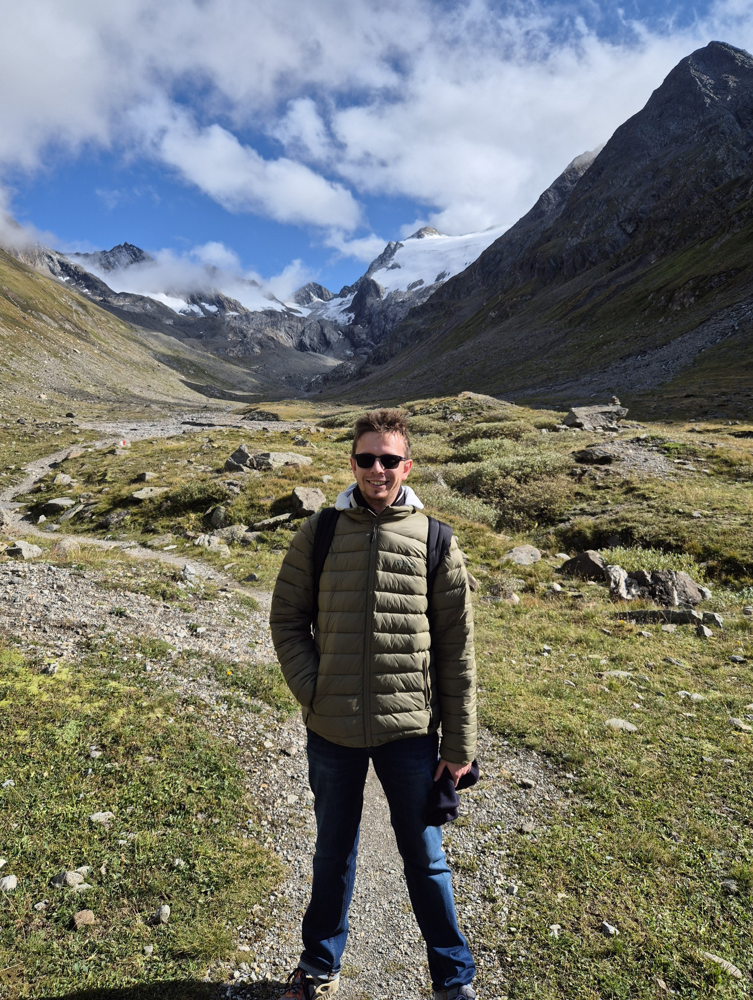

Kamil Rychlewicz
['kamʲil rɨx'lɛvʲit͡ʃ]
Welcome to my website! I am currently a postdoctoral researcher in the Chair of Arithmetic Geometry at EPFL in Lausanne, Switzerland.
Until July 2024, I was a PhD student in Hausel Group in Institute of Science and Technology Austria.
Before that, I finished my Bachelor’s and Master’s in Mathematics at University of Warsaw, with Andrzej Weber as supervisor.
You can contact me under kamil{dot}rychlewicz{at}epfl{dot}ch.
Research interests
I am interested in various aspects of algebraic geometry, algebraic topology and representation theory.
This includes, but is not limited to topological invariants of algebraic varieties with group actions, generalized and equivariant cohomology theories, characteristic classes of singular spaces, toric varieties, geometry of flag, Schubert and quiver varieties. You can find my research papers under Research.
Other
I also have an interest in LLM usage and training in mathematics. I am actively engaged in some mathematical olympiads and competitions.
I am also a member of the board of EPDA, EPFL Postdoc Association. Feel free to contact me if you would like to know more, if you have questions about postdoc life, or if you would like to organise some activity.

Address
EPFL FSB MATH ARG
Bat. MA, Station 8
1015 Lausanne
Switzerland
You can find me in the office MA B3 494, on the third floor of the Mathematics building.